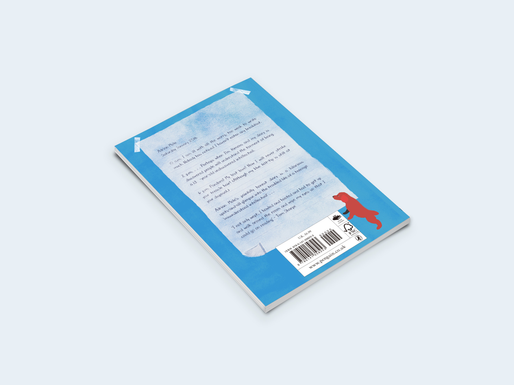
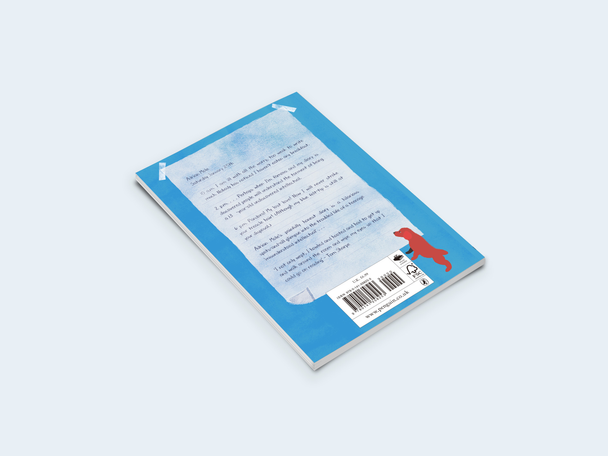
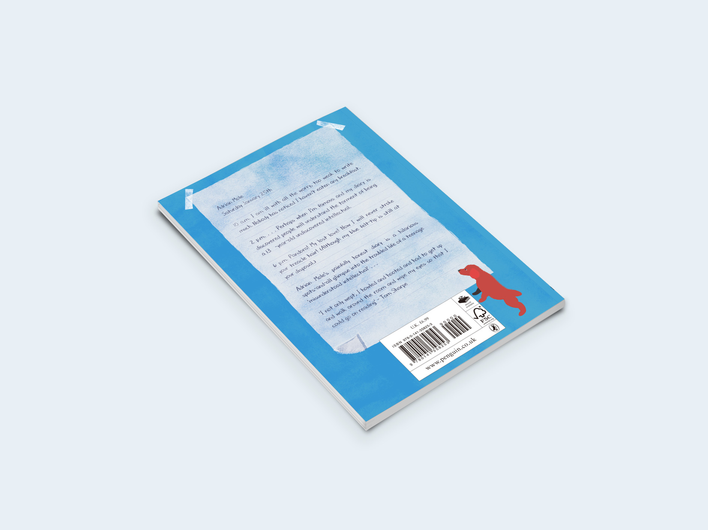

DESIGN

 

This project aims to response the 2017 Penguin Student Design Award. Based on the book content, I chose the diary as a main element in my design. In addition, the diary can also be seen as a window, through which Mole looked into the outside world. The diary and Mole's bedroom is his own little world.
DESIGN
